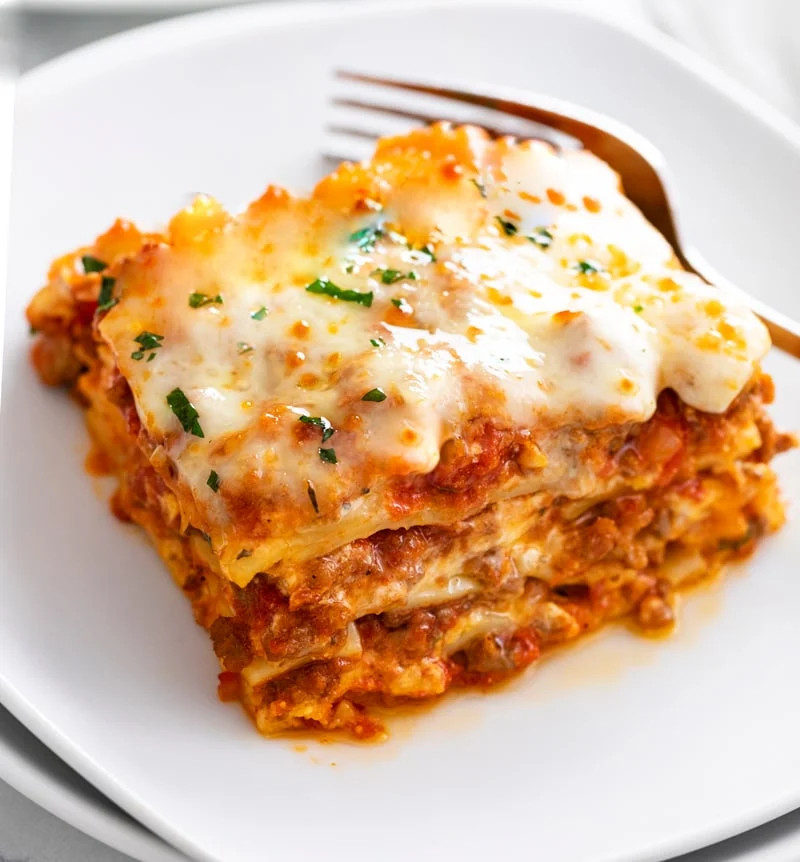

Odin's Lasagna Recipe
Odin's very own Lasagna Recipe

Ingredients
- Meat: This lasagna recipe starts with a pound of ground meat (½ pound ground pork, ½ pound lean ground beef).
- Onion: A diced onion is cooked until translucent with the ground meat.
- Canned Tomatoes: You'll need a can of tomato sauce and a can of crushed tomatoes.
- Fresh Herbs: For fresh flavor, chop two tablespoons of parsley and crush one clove of garlic
- Sugar: A dash of sugar balances out all of the acidity from the tomatoes.
- Spices & Seasonings: This homemade lasagna is seasoned with dried basil, dried oregano, salt, and black pepper.
- Noodles: Of course, you'll need lasagna noodles! This recipe calls for uncooked noodles, but you can use the oven-ready variety to save time.
- Cheese: The cheese layer is made up of cottage cheese and Parmesan. You'll also need shredded mozzarella.
- Eggs: Eggs make the cheese layer extra creamy. Plus, they act as a binding agent (which means they hold the layer together).
How to Make Homemade Lasagna
Making homemade lasagna much easier than it looks. You'll find the full, step-by-step recipe below — but here's a brief overview of what you can expect:
- · Cook the meat: Cook the ground meat in a skillet until browned and crumbly. Add the onion and continue cooking until it's translucent. Stir in the canned tomato products, half of the parsley, garlic, basil, 1.5 teaspoons of salt, oregano, and sugar.
- · Cook the noodles: Boil the lasagna noodles in lightly salted water until they're al dente.
- · Make the cheese layer: Mix cottage cheese, Parmesan cheese, eggs, the remaining parsley, the remaining salt, and pepper in a bowl.
- · Assemble the lasagna: Layer the ingredients according to the recipe (starting with sauce and ending with mozzarella) until the lasagna is assembled.
- · Bake the lasagna: Cover with foil and bake in the preheated oven for about half an hour. Remove the foil and continue baking until the top is golden brown.
How Long to Cook Lasagna
In an oven preheated to 375 degrees F, this homemade lasagna should be perfectly baked in about 50 minutes (30-40 minutes covered, 5-10 minutes uncovered).
How to Store and Freeze Lasagna
Allow the homemade lasagna to cool completely, then transfer the leftovers to an airtight container. Store in the refrigerator for up to four days. Reheat in the oven or in the microwave.
If you plan to freeze lasagna, it's best to bake it in a foil pan. Allow it to cool completely, then tightly wrap the entire dish in storage wrap. Next, wrap it in at least one tight layer of aluminum foil. Freeze for up to three months. Thaw in the fridge overnight and reheat in the oven or microwave.